screenshot_0 · full
[1920, 990] → [1920, 990] · 保留像素 100.0% · 场景 0


坐标：[0, 0, 1920, 990] · 原因：first_screenshot
算法版本：experimental_theme_aware_per_step_v2。仅用于预览，生成流程未修改。
返回任务总览 · 查看全部步骤拼图 · 查看算法判断 JSON
左侧为原图预览和选区（绿色：裁剪；蓝色：保留整图），右侧为此算法的输出预览；实验版尚未用于生成。点击图片查看原尺寸；预览自动缩放。像素减少比例不等于 token 减少比例。
[1920, 990] → [1920, 990] · 保留像素 100.0% · 场景 0
坐标：[0, 0, 1920, 990] · 原因：first_screenshot
[1920, 990] → [1920, 990] · 保留像素 100.0% · 场景 0
原图与选区
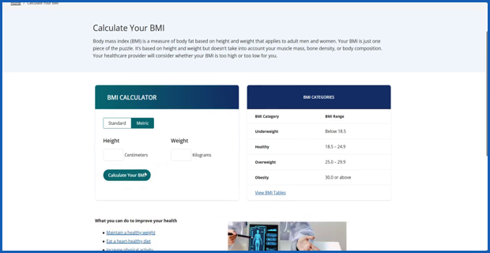
算法输出预览
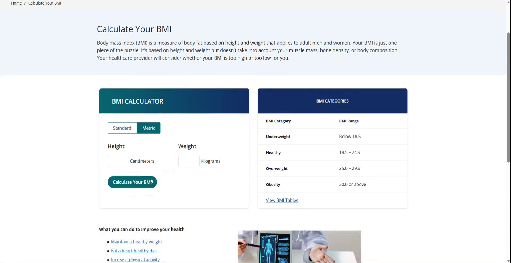
坐标：[0, 0, 1920, 990] · 原因：changes_spread_keep_full
[1920, 990] → [1140, 855] · 保留像素 51.3% · 场景 0
算法输出预览
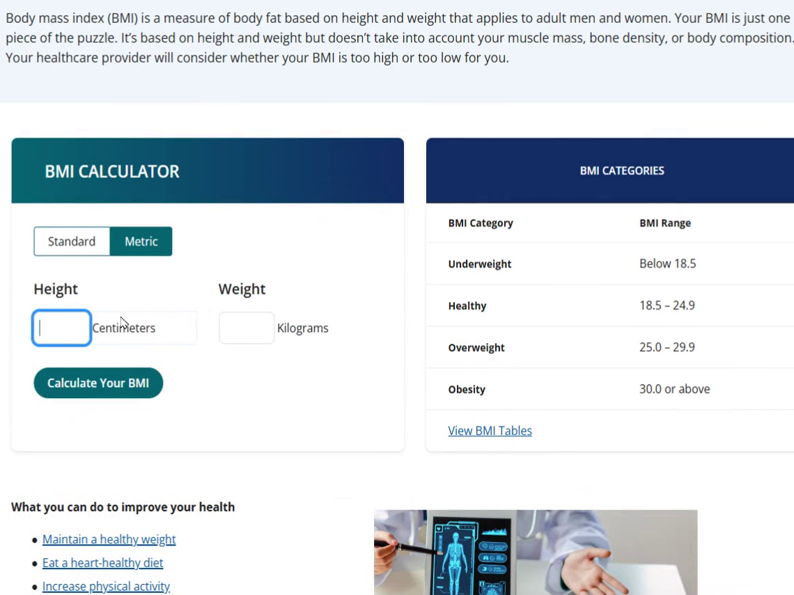
坐标：[356, 135, 1496, 990] · 原因：localized_change
[1920, 990] → [598, 150] · 保留像素 4.7% · 场景 0
算法输出预览
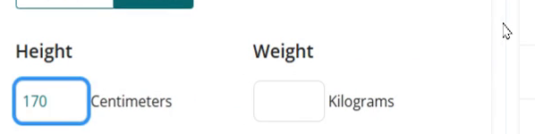
坐标：[387, 493, 985, 643] · 原因：localized_change
[1920, 990] → [610, 166] · 保留像素 5.3% · 场景 0
原图与选区
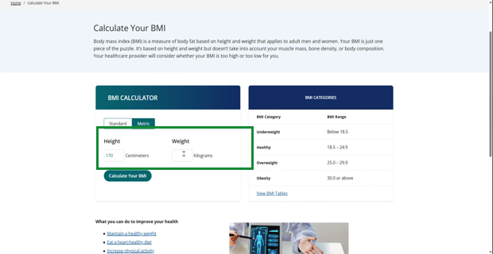
算法输出预览
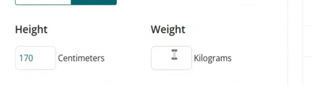
坐标：[375, 493, 985, 659] · 原因：localized_change
[1920, 990] → [94, 77] · 保留像素 0.4% · 场景 0
坐标：[655, 565, 749, 642] · 原因：localized_change
[1920, 990] → [1180, 496] · 保留像素 30.8% · 场景 0
算法输出预览
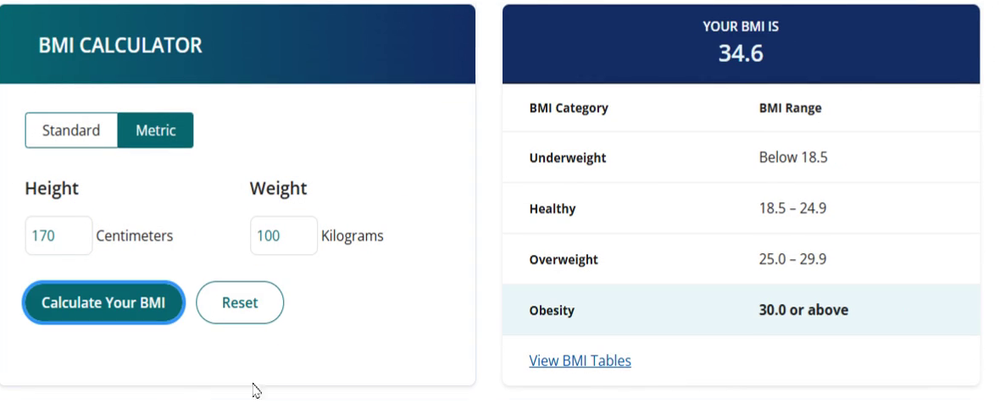
坐标：[375, 328, 1555, 824] · 原因：localized_change
[1920, 990] → [1180, 757] · 保留像素 47.0% · 场景 0
算法输出预览
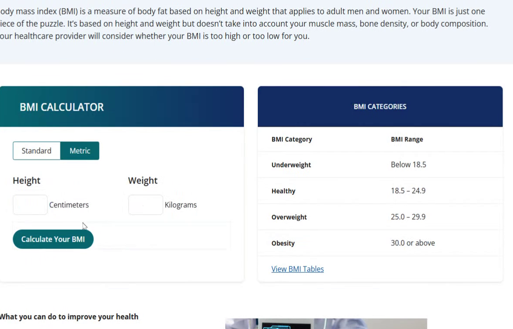
坐标：[375, 135, 1555, 892] · 原因：localized_change
[1920, 990] → [340, 553] · 保留像素 9.9% · 场景 0
原图与选区
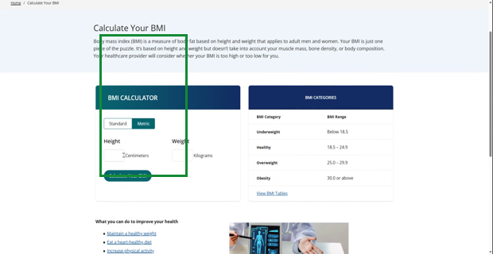
算法输出预览
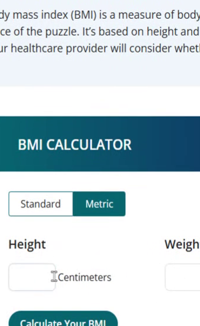
坐标：[390, 136, 730, 689] · 原因：localized_change
[1920, 990] → [174, 106] · 保留像素 1.0% · 场景 0
算法输出预览
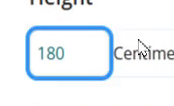
坐标：[375, 553, 549, 659] · 原因：localized_change
[1920, 990] → [384, 106] · 保留像素 2.1% · 场景 0
原图与选区
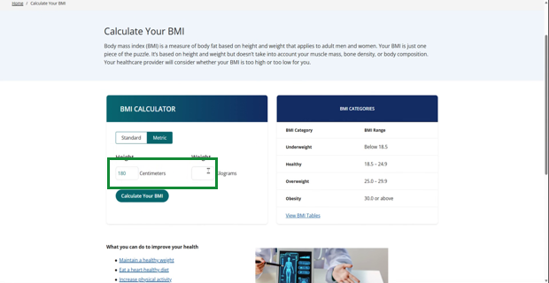
算法输出预览
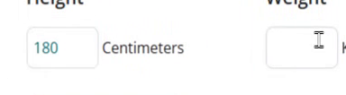
坐标：[375, 553, 759, 659] · 原因：localized_change
[1920, 990] → [924, 605] · 保留像素 29.4% · 场景 0
原图与选区
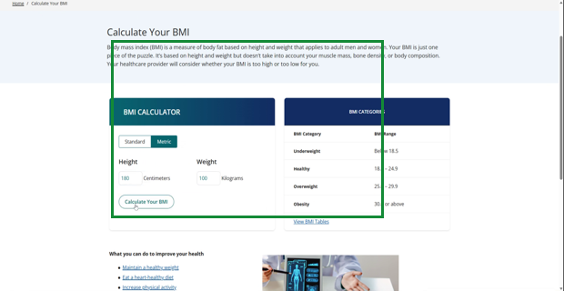
算法输出预览
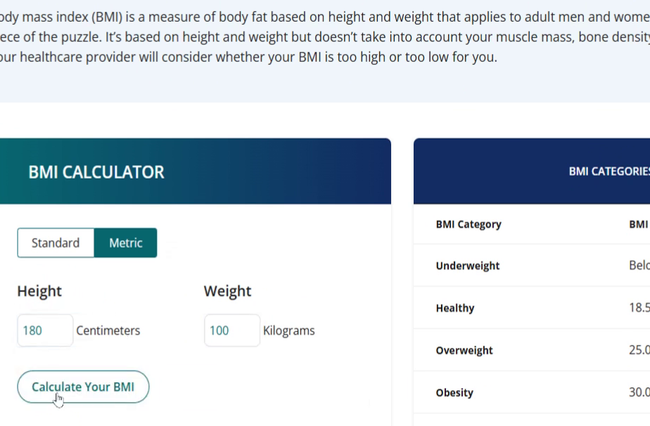
坐标：[380, 137, 1304, 742] · 原因：localized_change
[1920, 990] → [1180, 433] · 保留像素 26.9% · 场景 0
原图与选区
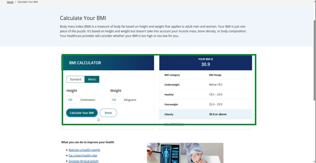
算法输出预览
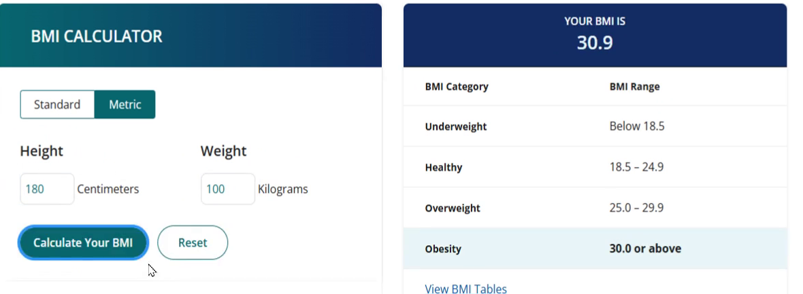
坐标：[375, 328, 1555, 761] · 原因：localized_change
[1920, 990] → [1180, 626] · 保留像素 38.9% · 场景 0
原图与选区
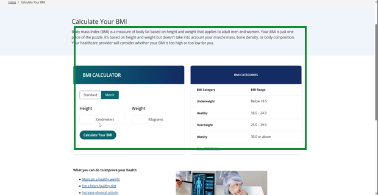
算法输出预览
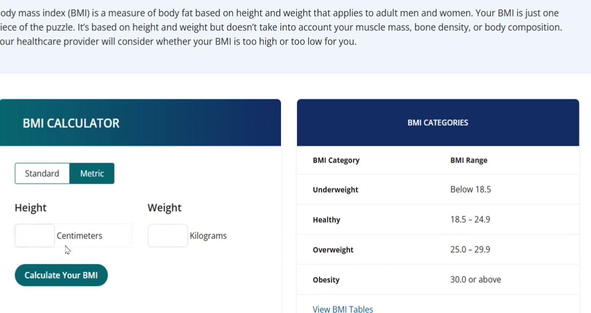
坐标：[375, 135, 1555, 761] · 原因：localized_change
[1920, 990] → [1045, 581] · 保留像素 31.9% · 场景 0
算法输出预览
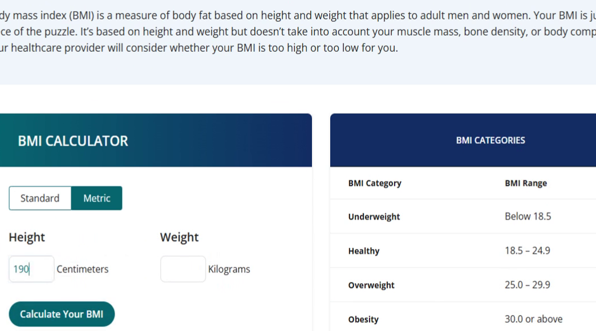
坐标：[389, 134, 1434, 715] · 原因：localized_change
[1920, 990] → [336, 186] · 保留像素 3.3% · 场景 0
原图与选区
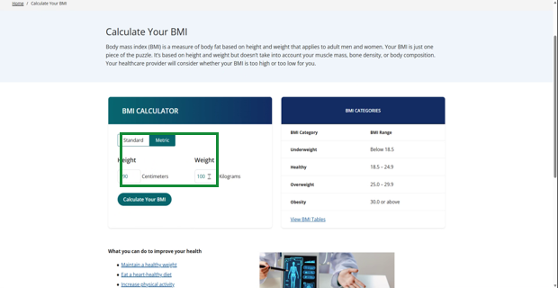
算法输出预览
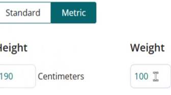
坐标：[414, 457, 750, 643] · 原因：localized_change
[1920, 990] → [1180, 409] · 保留像素 25.4% · 场景 0
算法输出预览
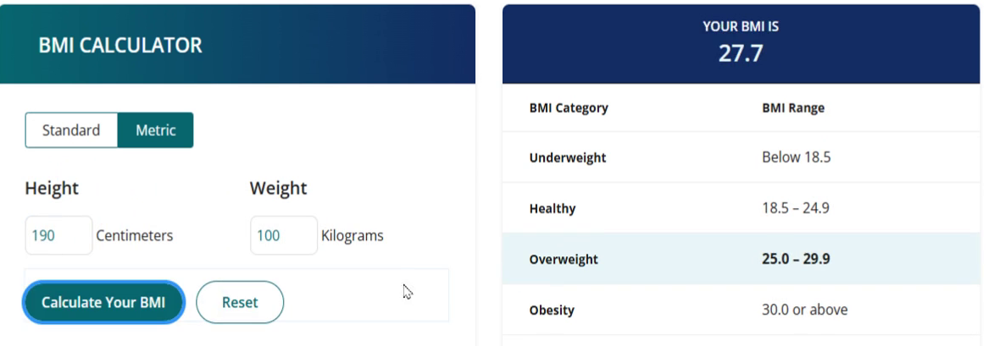
坐标：[375, 328, 1555, 737] · 原因：localized_change